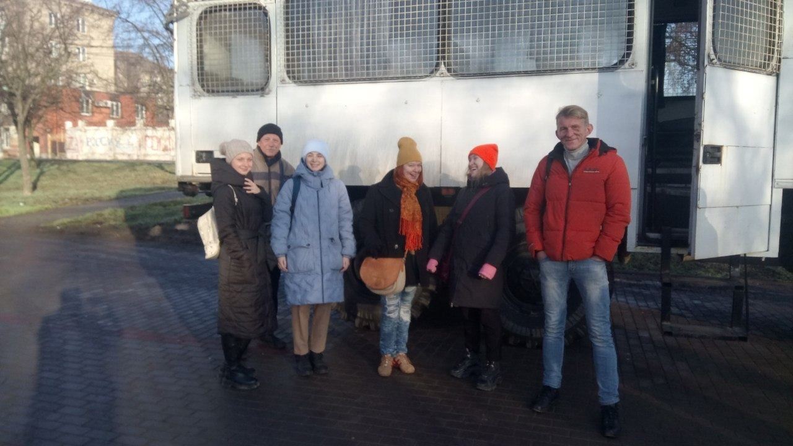

НОВОСТИ
-
26 января состоялся показ спектакля-концерта "Душа солдатская и доля" для мариупольских школьников. Оригинальную сценическую версию культовой поэмы Александра Твардовского "Василий Тёркин" посмотрели учащиеся ОШ № 27.
Живой и увлекательный рассказ о фронтовых приключениях, буднях и подвигах бравого бойца, задушевные песни военных лет и яркие картины солдатской жизни захватили внимание ребят, с удовольствием восприняли они интерактивные игровые моменты спектакля. По окончании актёров провожали горячими аплодисментами, многие зрители подходили и лично поблагодарили исполнителей.
Двумя выездными показами спектакля "Душа солдатская и доля" Мариупольский драмтеатр открыл цикл мероприятий, посвященных 80-летию освобождения Донбасса от немецко-фашистских захватчиков. -
21 января, в День инженерных войск России, Мариупольский драмтеатр поздравил с профессиональным праздником военных спасателей. Особым подарком для них стал спектакль-концерт "Душа солдатская и доля" по поэме Твардовского "Василий Тёркин" (режиссёр-постановщик и исполнитель заглавной роли - заслуженный артист РФ Александр Ростов).
Ряд красочных эпизодов знаменитой военной эпопеи был мастерски разыгран артистами на импровизированной сцене, с которой к героям сегодняшнего дня обращался легендарный солдат Великой Отечественной. Его несокрушимая сила духа, мужество, жизнелюбие, юмор и смекалка, непоказной патриотизм и твердая вера в победу естественно нашли живой отклик у зрителей, которые от души благодарили исполнителей щедрыми аплодисментами, цветами и словами искренней признательности. -
Сегодняшние "Водевили" были приняты мариупольской публикой восторженными аплодисментами - достойное и вдохновляющее завершение очередного этапа в жизни Мариупольского драматического театра
-

Благодаря поддержке и предоставленному транспорту наших постоянных зрителей и друзей из Сводного отряда полиции Санкт-Петербурга и Ленинградской области Мариупольский драматический театр подарил Новогоднюю сказку детям посёлка Старый Крым
-
Несколько месяцев назад ведущие театры Москвы выступили с инициативой акции по сбору средств в поддержку Мариупольского драмтеатра. Партнером акции стал Благотворительный фонд Евгения Миронова «Театральные инициативы». С его помощью 18 театров, среди которых Театр им. Моссовета, Et Cetera, «Современник», Театр на Таганке, Театр на Малой Бронной, Геликон-опера, Театр Наций и другие, собрали более 8 миллионов рублей. На эти деньги были закуплены и переданы театру так необходимые звуковое и электрооборудование, музыкальные инструменты, оргтехника, швейные машинки, оборудование для создания спецэффектов, бензиновый и парогенератор и многое другое.
Мы безмерно благодарны за действенное участие всем, кто словом и делом помогает возрождению русского театра в Мариуполе! Ваша поддержка и внимание вдохновляют для творческой работы, а переданные материалы дают технические возможности для неё. Спасибо вам, и пусть сделанное добро возвращается к вам сторицей! -
26 декабря зажигательное Новогоднее представление у театральной ёлки и новый спектакль-карнавал "Бременские музыканты" по приглашению городской администрации посетили ученики нескольких мариупольских школ. Перед показом, в сопровождении Деда Мороза и Снегурочки, на сцену вышли глава администрации Мариуполя Константин Иващенко и художественный руководитель театра, заслуженный артист РФ Александр Ростов. Поздравив ребят с наступающими праздниками тёплыми пожеланиями и добрыми напутствиями, они пригласили присутствующих в волшебный мир красивой и светлой сказки.